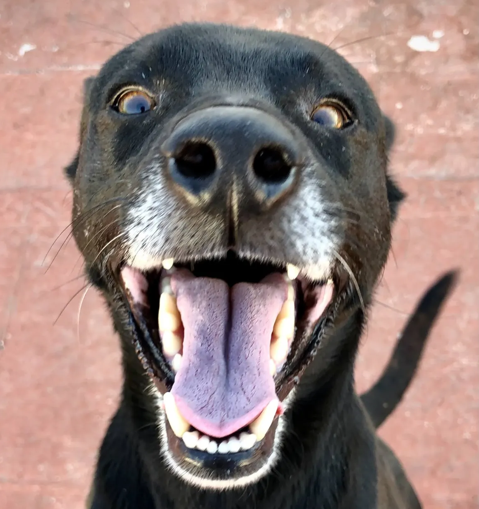

Sobre mi
Hola!, me llamo Alex, vivo en la ciudad autonoma de buenos aires y estudio Ingeniería en Informatica en la
Universidad Argentina De la Empresa, actualmente voy por mitad de carrera y tengo pensado irme por el lado del desarrollo mobile.
Cuando llego a casa me encanta pasar salir a pasear con mis mascotas y me ayudan mucho a desconectar, se los presento :)
| Foto | Descripción |
|---|---|
|  |
NasusNasus es un perrito mestizo que adoptamos de la calle cuando apenas era un cachorrito
|
PunyPuny es una caniche que adoptamos de una familia que por varios motivos tuvieron que viajar
|
|
Leona
|
|

|
LenguasCon su lengüita siempre afuera, Lenguas es una chihuahua que de peque tuvo una caida y tiene la lengüita para afuera pero para nosotros es lo que la hace especial y decidimos adoptarla
|